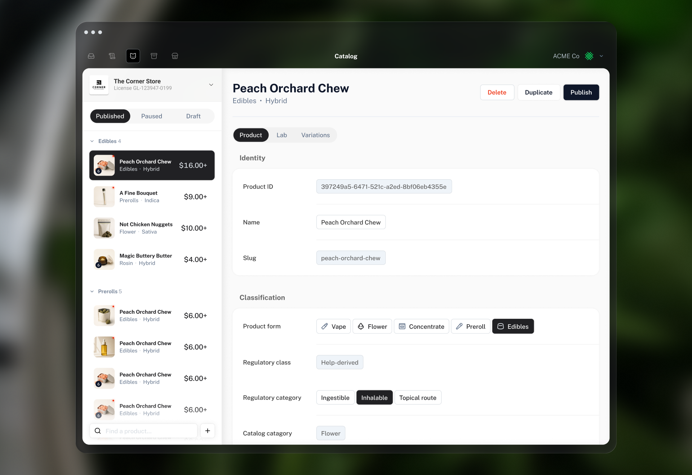

Full case study
Classroom Assignment Management
How I replaced a dense assignments table with a priority view that helped teachers find students who needed support.
Read case studyI turn tangled workflows into clear product decisions, shared models, and interfaces people can use.

Full case study
How I replaced a dense assignments table with a priority view that helped teachers find students who needed support.
Read case studyProject preview
Designing clearer structures and reusable patterns for a platform that supports complex learning experiences.
Ask me about this workProject preview
Making employer workflows more consistent, measurable, and scalable.
Ask me about this work01
I map relationships and workflows with partners so we can agree on the problem before designing screens.
02
Research and prototypes help me turn competing needs into a clear, testable product direction.
03
Shared models and working sessions make decisions easier to explain, build, and extend.

Full case study
How I clarified a complex retail catalog, its Georgia requirements, and the data behind publication.
Read case studyProject preview
Exploring ways to make everyday systems easier to understand, navigate, and improve.
Ask me about this workProject preview
Designing simple tools and rituals that help teams make better product decisions.
Ask me about this work